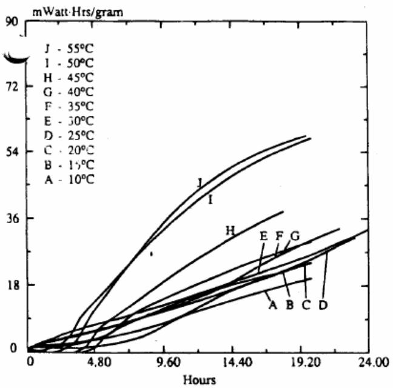
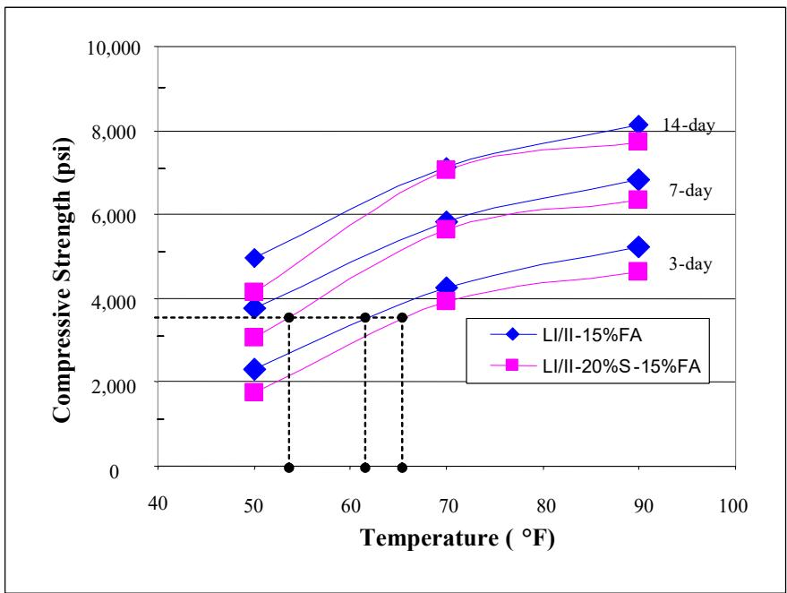
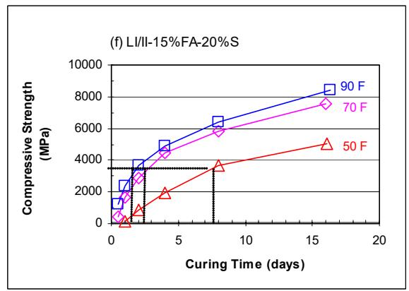
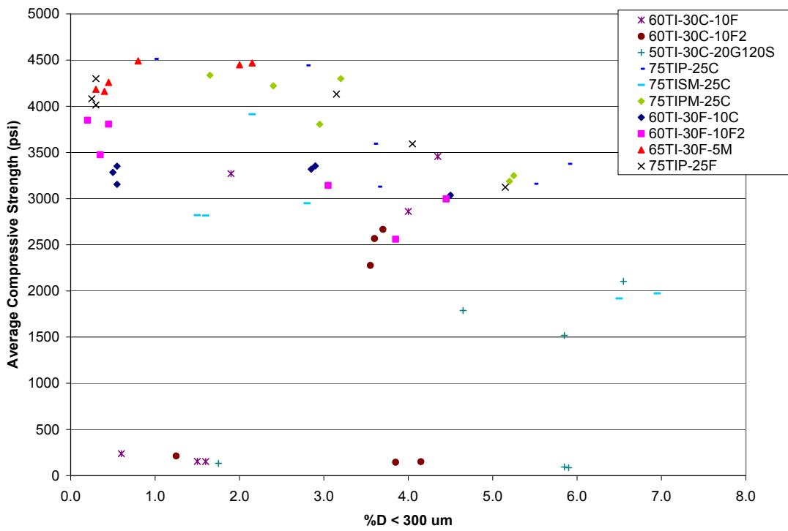
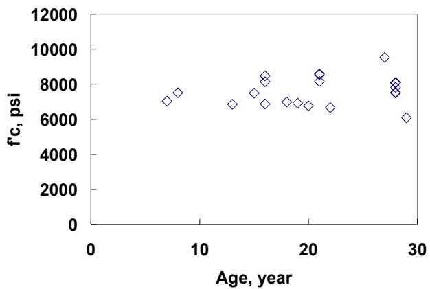
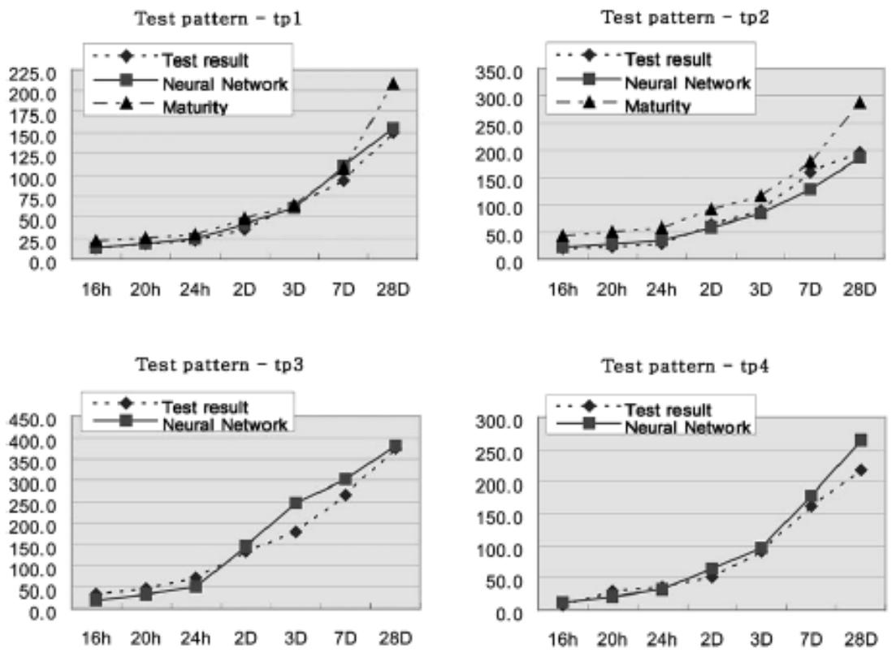

Pozzolanic Reaction
The pozzolanic reaction is a chemical process in which amorphous siliceous or aluminous materials with little inherent cementitious value react with calcium hydroxide released during Portland cement hydration. This interaction occurs in the presence of water and results in the formation of additional calcium-silicate-hydrate gel along with other hydrates, while releasing heat [1] [2] [3]. By consuming calcium hydroxide and refining the pore structure, this slower secondary reaction enhances the long-term strength and durability of concrete despite potentially reducing early-age performance [1] [2] [3].
Sources (6)
Key findings
- The report found that curing temperature strongly governed the pozzolanic reaction of fly ash and slag, with higher temperatures accelerating both OPC hydration and the pozzolanic reaction to enable ternary blends to reach early strengths comparable to binary mixes [1].
- The analysis showed that the growing use of supplementary cementitious materials with slower-developing pozzolanic reactions led to a decline in mean 28-day core compressive strength, prompting recommendations for using 56-day strength measurements [4].
- The conclusions confirmed that pozzolanic SCMs actively reacted with calcium hydroxide to generate additional C-S-H, which consumed CH and enhanced long-term compressive strength while moderating early-age strength development [3].
- The report concluded that incorporating Class C fly ash refined the pore structure, raised water contact angles, and lowered water absorption rates, thereby delaying critical saturation and improving durability against moisture ingress [6].
Fundamental Mechanisms and Temperature Sensitivity
The pozzolanic reaction is a chemical process in which amorphous siliceous or aluminous materials react with calcium hydroxide released during Portland cement hydration to form additional calcium-silicate-hydrate gel [1] [2] [3]. This secondary reaction proceeds more slowly than primary cement hydration, resulting in delayed strength development but enhanced long-term durability through pore structure refinement [1].
Research problem — The markedly slower hydration rate of pozzolanic reactions at reduced temperatures extends set times and depresses early-age strength, creating challenges for meeting performance targets without requiring warmer curing conditions [1]. Existing calorimetry methods are often too expensive, complex, or slow to provide practical field monitoring of the low-heat pozzolanic reaction, leaving a gap in reliable testing for quality control and mix-design optimization [2].
State of the art — Current practice recognizes pozzolanic reaction as a secondary cementing mechanism that enhances long-term durability but significantly delays early strength gain, particularly at low temperatures [1]. While laboratory assessment relies on calorimetry and kinetic models to predict heat evolution, the field lacks consensus standards for field deployment, driving ongoing development of rapid testing methods and performance-based specifications [2].
The following figure illustrates how temperature influences the total heat evolution in blended cements containing slag.

Total heat of blended cement with slag at different temperatures (adapted from Ma et al. 1994) [2]The figure plots the cumulative heat evolution in milliwatt-hours per gram against time for a slag-blended cement system subjected to various curing temperatures. This demonstrates that slag-blended cement has low reactivity at room temperature and is strongly heat activated, which aligns with the concept of pozzolanic reaction being a slower secondary mechanism.
Findings from the reports
- The pozzolanic reaction of fly ash and slag proceeds more slowly than ordinary Portland cement hydration, particularly at low temperatures, which lengthens set times and depresses early-age strength [1] [2].
- Increasing the content of supplementary cementitious materials reduces the peak heat of hydration and lowers the maximum temperature rise in the heat-evolution curve, thereby decreasing thermal cracking risk [1] [2].
- Lower curing temperatures markedly slow the pozzolanic reaction, extending the period required to achieve target strength compared to higher temperature conditions [1] [2].
- The pozzolanic reaction ceases at a warmer datum temperature than ordinary Portland cement hydration, requiring placement and curing at relatively higher temperatures to achieve strength development [1].
- Elevated curing temperatures accelerate the pozzolanic reaction, allowing ternary blends to reach early strengths comparable to binary mixes within seven days and potentially surpass them by fourteen days [1].
Novelty & rigor — The research introduces a novel approach to modelling pozzolanic reactions by directly measuring the specific datum temperature and activation energy for each blend, departing from the traditional use of a fixed ordinary Portland cement reference [1]. This method captures the true thermal limits of the system, revealing that slag-rich concretes retain strength-gain potential at higher temperatures than previously assumed due to linear increases in datum temperature and exponential rises in activation energy [1]. The experimental protocol ensures reproducibility by specifying precise mix designs with fixed fly ash and variable slag replacements, alongside standardized curing regimes and testing procedures for heat of hydration and compressive strength [1].
The figure below illustrates how varying slag replacement levels influence these key thermal parameters.
 Effect of slag replacements on datum temperature and activation energy [1]
Effect of slag replacements on datum temperature and activation energy [1]
The figure plots Activation Energy against Slag Replacement percentage, showing a positive correlation where the values increase as the replacement level rises.
Reported values
| Parameter | Value | Context | Source |
|---|---|---|---|
| age | about 14 days | strength comparison between HI-15%FA-20%S ternary mortar and binary cement mortar due to accelerated pozzolanic reaction | [1] |
| age | about 7 days | comparison of strength for ternary vs binary cement mortars cured at 90°F | [1] |
| curing temperature | 90°F | high curing temperature for mortars made with ternary cements | [1] |
| strength difference | 10% | comparable strength between ternary and binary cement mortars at about 7 days | [1] |
The effect of curing temperature on mortar strength at various ages is illustrated in the following figure.

Effect of curing temperature on mortar strength at given ages. [1]The figure plots compressive strength against curing temperature for mortars containing fly ash and slag, showing that higher temperatures accelerate the development of early-age strength.
Across the reviewed reports, supplementary cementitious materials exhibit a pozzolanic reaction that is inherently slower and generates less heat than primary Portland cement hydration, with this kinetic disparity becoming more pronounced at lower curing temperatures. While low-temperature conditions significantly retard early-age strength development due to this sluggish reaction kinetics, elevated curing temperatures effectively accelerate the process, allowing ternary blends to achieve strengths comparable to or exceeding binary mixes within a week. The collective evidence indicates that increasing SCM content not only lowers the peak heat of hydration and thermal cracking risk but also raises the datum temperature required for reaction activation, thereby imposing stricter minimum curing temperature requirements compared to ordinary Portland cement. [1] [2]
The impact of these supplementary cementitious materials on setting behavior in hot weather conditions is illustrated below.
 Initial setting time of concrete mixtures containing various supplementary cementitious materials at different curing temperatures. [1]
Initial setting time of concrete mixtures containing various supplementary cementitious materials at different curing temperatures. [1]
The figure plots the initial setting time against curing temperature for a control mixture and several blends incorporating fly ash and silica fume. As the curing temperature increases, the initial set time decreases significantly across all mixtures, with the most pronounced drop occurring between 50°F and 70°F. The increased curing temperature accelerates ion dissolution of SCMs and pozzolanic reaction more effectively than it does for OPC hydration, resulting in a shortened set time.
Implications — Designers must account for delayed early-age strength gain in blended cements by specifying longer curing periods and adjusting traffic-opening schedules, particularly during cold weather when pozzolanic reactions are significantly slowed [1]. Specifications should incorporate adjusted maturity models with higher datum temperatures to accurately predict strength development, as standard assumptions may underestimate the time required for adequate hydration in low-temperature environments [1]. Practitioners should employ active temperature management strategies, such as curing blankets or chemical accelerators, during cold-weather placement to mitigate slow reaction rates and ensure that design strengths are achieved within acceptable timeframes [1].
The following figure illustrates how varying curing temperatures directly influence the compressive strength development of mortar.

Effect of curing temperature on mortar strength [1]The figure plots compressive strength against curing time for a blended cement system containing fly ash and silica fume, comparing performance at three distinct temperatures.
Limitations — The observed trends regarding setting time, early-age strength, and cracking risk are restricted to the specific cement types and supplementary materials tested, limiting their generalizability to other sources or blends [1]. Accelerated reaction rates in ternary cements are highly sensitive to curing temperature, meaning results derived from average seasonal conditions may not accurately predict performance under colder or more variable field environments [1]. Key aspects such as the influence of fly ash replacement levels on setting behavior and the variability among slag suppliers remain unresolved and require further verification [1].
Evidence: 3 reports (2 primary)
Reactivity Performance and Strength Development
Research problem — The reliance on early-age strength metrics for pavement design is problematic because the slower pozzolanic reaction of supplementary cementitious materials leads to reduced compressive strength at standard curing intervals, potentially compromising safety or necessitating overly conservative designs [4]. Achieving consistent durability and strength in ternary cement systems is hindered by the inherent chemical and physical variability of supplementary materials, which creates uncertainty in mix performance and reliability [5]. The use of certain pozzolans introduces excessive water demand and severe early-age strength retardation when combined with specific admixtures, complicating workability requirements and construction scheduling [5]. Pozzolanic materials can accelerate plastic-shrinkage cracking by altering bleeding rates and capillary pressure development, thereby jeopardizing the long-term durability and corrosion resistance of concrete structures [3]. Chloride intrusion into pozzolan-rich concrete can suppress the beneficial pozzolanic reaction and alter microstructure, leaving the material vulnerable to accelerated freeze-thaw damage and harmful phase formation [6].
The following figure illustrates how particle size distribution influences the mechanical performance of these systems by showing the effect of particles smaller than 300 µm on average compressive strength.

Effect of % D < 300 µm on the average compressive strength for all mixtures [5]The figure plots Average Compressive Strength against the percentage of material smaller than 300 µm (%D < 300 um) for various concrete mixtures. Data points are scattered across a wide range of strengths, with some mixtures showing high early-age strength while others exhibit significantly lower values at similar particle size percentages.
State of the art — Current practice acknowledges that the pozzolanic reaction of supplementary cementitious materials proceeds more slowly than ordinary Portland cement, leading designers to shift from 28-day compressive-strength checks to a 56-day target for pavement mixes [4]. The emerging state-of-the-art combines standardized material testing with large-scale experimental data and predictive compositional mapping to enable reliable use of pozzolanic reactions in high-performance concrete [5].
The figure below illustrates the compressive strength results associated with these testing protocols.

Compressive strength of concrete at various ages. [4]The figure plots compressive strength in psi against the age of the material in years, showing data points that generally increase over time.
Findings from the reports
- The report concluded that incorporating Class C fly ash refined the pore structure, which raised water contact angles and lowered water absorption rates to delay critical saturation [6].
- The conclusions confirmed that pozzolanic supplementary cementitious materials actively react with calcium hydroxide to generate additional C-S-H, thereby consuming CH and enhancing long-term compressive strength [3].
- The study recommended employing 56-day strength measurements rather than 28-day values for concrete pavement design in Iowa to account for delayed strength gain from pozzolanic activity [4].
Novelty & rigor — The research introduces a comprehensive pozzolanic-index assessment framework for a diverse array of supplementary cementitious materials, evaluating their reactivity performance within extensive ternary mixture designs to determine compliance with standard activity indices [5]. Methodological rigor is established through the strict replication of specific mixture proportions and material classifications, requiring adherence to standardized testing protocols for water demand and strength development at defined ages to ensure reproducible results [5]. A novel contribution lies in quantifying the synergistic interaction between pozzolanic binder chemistry and penetrating sealers, specifically demonstrating how fly ash-induced pore refinement enhances water repellency and delays critical saturation thresholds [6].
Reported values
| Parameter | Value | Context | Source |
|---|---|---|---|
| strength testing age | 28-day | concrete pavement design with slow pozzolanic reaction of SCMs (alternative) | [4] |
| strength testing age | 56-day | concrete pavement design with slow pozzolanic reaction of SCMs | [4] |
| replacement rate | 20% | metakaolin | [5] |
| fly ash replacement percentage | 25% | mAir and mDcrack mixtures | [6] |
Across the reviewed reports, pozzolanic supplementary cementitious materials generally moderate early-age strength development while actively enhancing long-term compressive strength through the consumption of calcium hydroxide and generation of additional C-S-H. The specific reactivity performance varies significantly by material type, with silica fume and Class C fly ash demonstrating superior activity indices compared to lower-reactivity Class F ashes that require more water. [3] [4] [5] [6]
The figure below illustrates the strength gain observed in mortar mixtures containing silica fume.
 Compressive strength development of mortar mixtures containing silica fume over time. [5]
Compressive strength development of mortar mixtures containing silica fume over time. [5]
The figure displays the compressive strength gain for various mortar mixtures containing silica fume plotted against curing days, showing that while some mixes exhibit lower initial strength, they generally achieve high long-term values comparable to or exceeding other formulations.
Implications — Designers should specify later-age strength requirements, such as at 56 days, to accurately capture the long-term capacity gains from supplementary cementitious materials and prevent under-design [4]. Specifiers must account for delayed early-age strength development when incorporating pozzolans, ensuring that workability is maintained through admixtures or high-fineness materials to mitigate plastic shrinkage risks [3]. The pore-refining effects of the pozzolanic reaction enhance the effectiveness of penetrating sealers and improve resistance to freeze-thaw cycles, making this chemical modification essential for long-term durability [6].
Limitations — Relying on standard 28-day compressive strength metrics may be misleading due to the slow kinetics of the pozzolanic reaction, necessitating consideration of later-age strength values for accurate performance assessment [4]. Early-age strength development can be slower and workability unpredictable when using these supplementary materials, which may also increase susceptibility to plastic shrinkage cracking due to reduced bleed water [3].
The figure below illustrates an example of predicted f_λ c ± development using a modular ANN.

Example of predicted f_λ c ± development by modular ANN [4]The figure displays four graphs comparing the compressive strength development over time for different test patterns.
Evidence: 4 reports (4 primary)
Related concepts
In this hierarchy
- Parent: Supplementary Cementitious Materials
- Sibling: Fly Ash
- Sibling: Ground Granulated Blast-Furnace Slag
- Sibling: Silica Fume
Related by shared evidence
- Supplementary Cementitious Materials — shares 6 reports
- Blended Cement — shares 4 reports
- Cement Hydration — shares 4 reports
- Concrete Curing — shares 4 reports
- Concrete Materials & Mixtures — shares 4 reports
- CP Tech Center Reports — shares 4 reports
- Fly Ash — shares 4 reports
- Heat of Hydration — shares 4 reports
Similar topics
- Cement Hydration
- Heat of Hydration
- Supplementary Cementitious Materials
- Hydration, Heat & Maturity
- Blended Cement
- Activation Energy
- Cementitious Materials & Chemistry
- Silica Fume
References
- K. Wang and Z. Ge, "Evaluating Properties of Blended Cements for Concrete Pavements," Department of Civil, Construction and Environmental Engineering, Iowa State University, Ames, IA, 2003. [Online]. Available: https://www.intrans.iastate.edu/wp-content/uploads/2018/03/blended_cements-1.pdf
- K. Wang, Z. Ge, J. Grove, J. M. Ruiz, and R. Rasmussen, "Developing a Simple and Rapid Test for Monitoring the Heat Evolution of Concrete Mixtures (Phase 3)," CTRE, Iowa State University, Ames, IA, Rep. FHWA Project 17 (Phase I), 2006. [Online]. Available: https://www.intrans.iastate.edu/wp-content/uploads/2018/03/CalorimeterReportPhaseIII.pdf
- B. Shafei, P. Taylor, B. Phares, and M. Kazemian, "Fiber-Reinforced Concrete for Bridge Decks," Bridge Engineering Center, Iowa State University, Ames, IA, Rep. TR-767, 2021. [Online]. Available: https://www.intrans.iastate.edu/wp-content/uploads/2021/12/fiber-reinforced_concrete_in_bridge_decks_w_cvr.pdf
- K. Wang, J. Hu, and Z. Ge, "Task 4: Testing Iowa PCC Mixtures for the AASHTO Mechanistic-Empirical Pavement Design Procedure," Center for Transportation Research and Education, Ames, IA, Rep. CTRE 06-270, 2008. [Online]. Available: https://www.intrans.iastate.edu/research/completed/testing-iowa-portland-cement-concrete-mixtures-for-the-mechanistic-empirical-pavement-design-guide/
- P. Tikalsky, V. Schaefer, K. Wang, B. Scheetz, T. Rupnow, A. St. Clair, M. Siddiqi, and S. Marquez, "Development of Performance Properties of Ternary Mixes, Phase 1," Center for Transportation Research and Education, Ames, IA, Rep. TPF-5(117), 2007. [Online]. Available: https://www.intrans.iastate.edu/research/completed/development-of-performance-properties-of-ternary-mixes-phase-1/
- J. T. Kevern, G. Adil, P. Taylor, S. Sadati, and K. Wang, "Evaluation of Penetrating Sealers for Concrete," National Concrete Pavement Technology Center, Iowa State University, Ames, IA, Rep. TR-765, 2022. [Online]. Available: https://www.intrans.iastate.edu/wp-content/uploads/2022/06/concrete_penetrating_sealers_eval_w_cvr.pdf
Feedback on this page